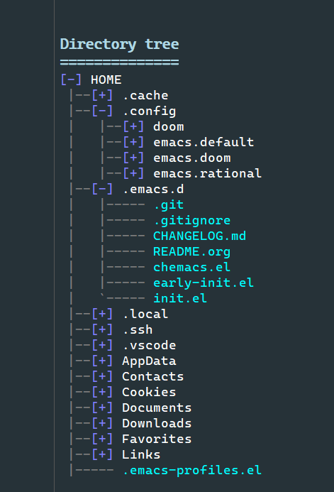

Table of Contents
emacs.d
My universal emacs configuration directory.
Loading emacs.org in emacs and running org-babel-tangle generates both early-init.el and init.el. This is based on information from System Crafters Emacs config, Emacs from scratch, especially Configure everything with Org Babel.
This file is also published as Read-The-Docs.
Linux info
Clone this to a folder, I'm using ~/.config/.emacs.default nowadays since I also use Chemacs2, but default for emacs is ~/.emacs.d or ~/.config/emacs.
The code for my linux setup is in dotfiles.
git clone https://github.com/sdaaish/emacs.d ~/.emacs.d
Windows info
To make Emacs work as good as possible make sure to set the HOME-variable in Windows. If this doesn't exist Emacs looks in $env:AppData\.emacs.d for it's configuration files. I have setup $env:HOME to $env:UserProfile so that I have the same file strcuture as in Linux. That files is in $HOME/config in most cases.
Nowadays I use Chemacs2 also in Windows and therefore I install the config in $env:UserProfile\.config\emacs.default. This setup is described in windotfiles.
Powershell
git clone https://github.com/plexus/chemacs2.git $env:HOME git clone https://github.com/sdaaish/emacs.d.git $env:HOME/.config/emacs.default git -C $env:HOME/.config/emacs.default submodule update --init
Edit $env:HOME/.emacs-profiles.el for chemacs2
Example file layout

Update submodules
Run this to update the submodules connected to this repository.
Get status
Welcome to the Emacs shell ~/work/emacs.d/emacs.d $ git submodule status --recursive
Update from remotes
Welcome to the Emacs shell ~/work/emacs.d/emacs.d $ git submodule update --recursive --remote --rebase
Sync the local git repository
Welcome to the Emacs shell ~/work/emacs.d/emacs.d $ git submodule sync --recursive